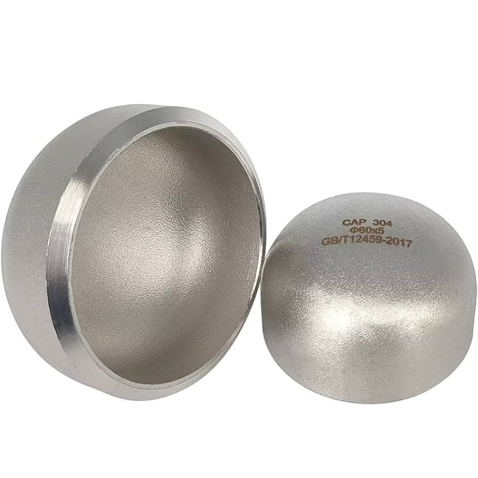
Stainless Steel Pipes & Butt-Weld Fittings
SS End Cap
SS End Cap: sizes ½" – 12"; SCH10, SCH40, SCH80, SS304/304L and more; stainless steel. Ask Fakhri Tools for a price on WhatsApp, by phone or at our trade counter in Al Quoz Industrial Area 3, Dubai.
- Product group
- Stainless Steel Pipes & Butt-Weld Fittings
- Sizes
- ½" – 12"
- Specs & ratings
- SCH10, SCH40, SCH80, SS304/304L, SS316/316L
- Material
- Stainless Steel
- Overnight WhatsApp messages answered by 7:30am
- UAE-wide delivery on orders from AED 5,000
Choosing the right one
Sizes, ratings and how to pick between them are explained on our guide to Stainless Steel Pipes & Butt-Weld Fittings. Not sure what you need? Send a photo of the old part, or its nameplate, on WhatsApp.
More in Stainless Steel Pipes & Butt-Weld Fittings
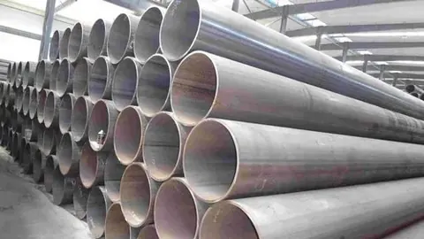
SS Pipes ERW¼" – 12"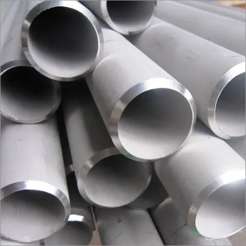
SS Pipe Seamless¼" – 12"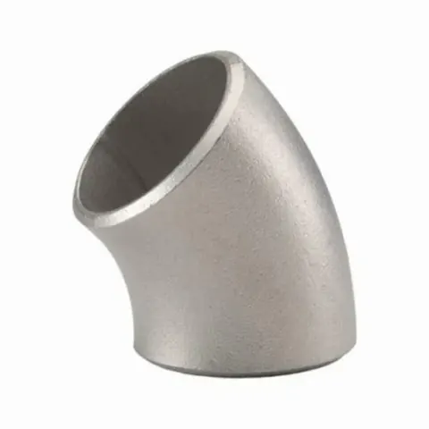
SS Elbow 45° Long Radius½" – 12"SS Elbow 45° Short Radius½" – 12"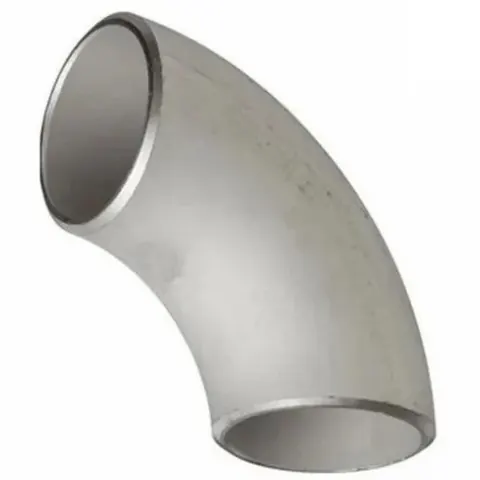
SS Elbow 90° Long Radius½" – 12"SS Elbow 90° Short Radius½" – 12"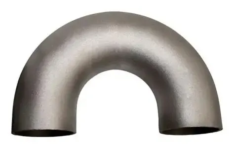
SS Elbow 180°½" – 12"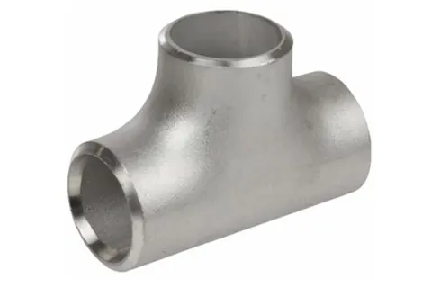
SS Equal Tee½" – 12"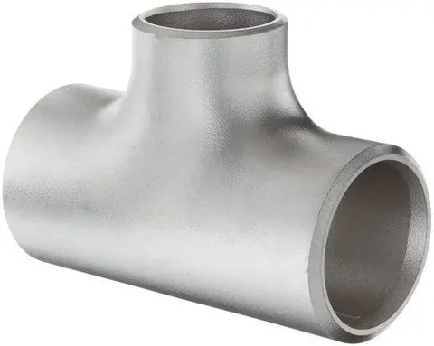
SS Reducing Tee¾" × ½" – 12" × 10"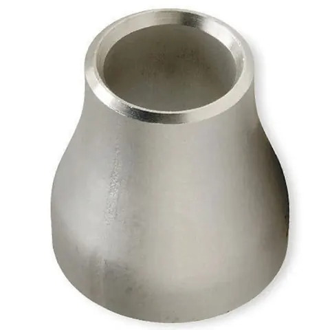
SS Concentric Reducer¾" × ½" – 12" × 10"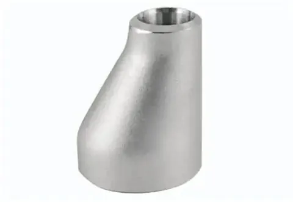
SS Eccentric Reducer¾" × ½" – 12" × 10"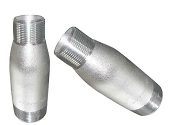
SS Concentric Swage Nipple¾" × ½" – 12" × 10"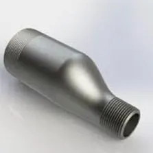
SS Eccentric Swage Nipple¾" × ½" – 12" × 10"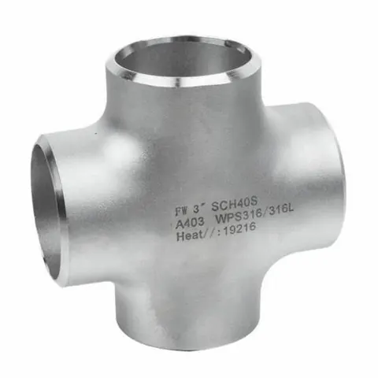
SS Cross½" – 12"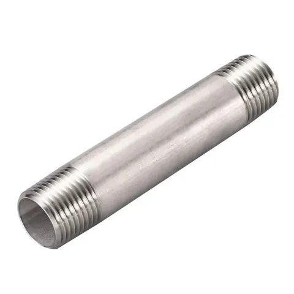
SS Long Nipple¼" – 8"Can’t find your size or part?
Send a photo of it, or its nameplate, on WhatsApp and we will tell you if we have it.
All products
Gate Valves 13Globe Valves 7Check Valves 17Ball Valves 17Y-Strainers 8Safety Valves & Air Vents 4Butterfly Valves 5QRC, Storz, Bauer & Universal Couplings 19Flexible Connectors 2Hammer Unions 13Carbon Steel Pipes & Butt-Weld Fittings 16Stainless Steel Threaded Fittings 16Gaskets & CNAF Sheets 7Stainless & Carbon Steel Flanges 10Chicago Couplings & Fittings 8Instrumentation Fittings 1Pressure Gauges 1Stainless Steel Pipes & Butt-Weld Fittings 16Socket-Weld Fittings 12Forged Threaded Fittings 13GI Pipes & Fittings 19Camlock Couplings 17Industrial Hoses 11Brass Pipe Fittings 23Foot Valves & Float Valves 7Hose Clamps 6Acrylic Tubes & Level Cocks 3